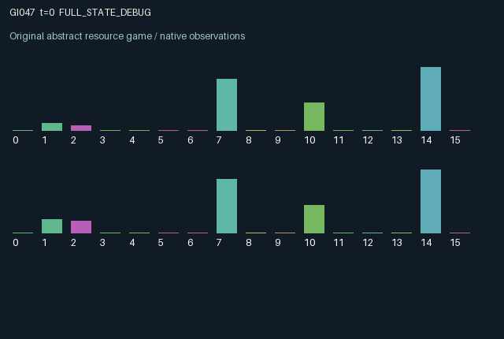

GI047 / LEGACY_ARRAY
astra-d2-00047: Shared irrigation with delayed cross-patch succession
2 agents5 actions16 observation columns32 original horizonRuntime: PASS
Release verification episode
Untrained uniform legal actions. Actual JAX state sampled along the full original episode; full-state debug camera. No human performance or learning claim.

Run this game
crucibles play --game 47
Start Python locally, then open the address printed by the terminal. Installation, multiplayer, takeover and keyboard controls →
Objective, rewards & ending
Exact task contract
{
"termination": "Original kernel t >= 32; see mechanism and source"
}Declared per-step reward bounds: -1.0 to 1.0. Observability: source_defined.
Rules
Original mechanism document (historical status wording retained)
# astra-d2-00047: Shared irrigation with delayed cross-patch succession Status: original parentless source proposal. The author has not run this environment or an isolated validator. Each role manages one patch containing two abstract plant types: a lower-yield persistent type and a higher-yield water-demanding type. The actions are rest, sow type 0, sow type 1, harvest, and toggle the irrigation gate while surveying the other patch. Sowing is effective only with sufficient local nutrient. All action indices are legal. The state contains adults, a seed bank, seedlings, local nutrient, a shared water reserve, and persistent gate settings. Sowing enters the seed bank immediately. Only the previous seed bank contributes to next seedlings; only previous seedlings contribute to next adults. Seed-to-harvest effects therefore require multiple transitions. Adults recruit locally, while adult-derived seeds also reach the other patch when both stored gates are open. The two types differ in survival under water shortage, growth, nutrient effects, and harvest value. Patch-wide occupancy scaling makes the species compete for persistent space. Water recharges seasonally and is allocated proportionally to the two requests when scarce. Adult composition and the previously stored gate determine request size and hydration. A closed gate still permits reduced intake. Opening a gate can improve local hydration but increases competition for shared water and permits bilateral seed exchange. Toggle effects on water and diffusion start on the next transition. Harvest removes part of the previous adult biomass and restores some local nutrient; its effect on future water demand is delayed until the changed biomass is used. Each role sees its own adults, seed bank, seedlings, nutrient, and most recent harvest yield, plus both gates and the shared reserve. Surveying occurs only with a gate toggle and caches the other patch's post-transition total adult mass and type-1 fraction. These samples become stale. Shared water and public gate changes provide additional indirect information, so the information structure is partially observed rather than private in an absolute sense. The 16 columns are time, two local adult quantities, two local seed-bank quantities, two local seedling quantities, nutrient, own gate, other gate, normalized shared water, last local intake, cached other adult mass, cached other type-1 fraction, cache age, and last local harvest value. Initial plants, nutrient, and water use only explicit-key randomness; later dynamics are deterministic. The reward is tanh of harvest value minus sowing, survey/toggle, and drought costs. It is bounded in [-1, 1]. Remaining biomass and juvenile stages are preserved after transition 32 and are not assigned hypothetical future harvest value. Both roles change the shared water trajectory, and gate choices jointly control cross-patch composition over time. This is a synthetic resource-and-succession model related to common-pool allocation, staged growth, and dispersal ecology, not a scientifically calibrated ecosystem. It offers a causal mechanism proposal rather than a uniqueness claim. Nonisomorphism, operational mechanism eligibility, compiler success, and learning effectiveness remain unasserted. No parent, evaluation task, or outcome feedback was supplied.
Commands
0Action 0; see mechanism and source
1Action 1; see mechanism and source
2Action 2; see mechanism and source
3Action 3; see mechanism and source
4Action 4; see mechanism and source
Roles & abilities
agent_0 Original legacy agent; see mechanism and source
agent_1 Original legacy agent; see mechanism and source
Observation permissions
Training receives only the original observation rows. Role cameras use declared visibility; debug cameras are explicitly marked. Local benchmark records log debug exposure and role takeover history.
Exact observation layout
[]
Entity visibility & attributes
[]
Actual verification & provenance
Per-game execution receipt
{
"game": "gi047",
"status": "PASS",
"verification_revision": 2,
"source_sha256": "4b8c18bebe23aca5f75a1c28d7f74451580924fef8269019472f4fdf6ba56201",
"seed": 20261101,
"runtime": {
"jax": "0.4.38",
"numpy": "1.26.4",
"devices": [
"TFRT_CPU_0"
]
},
"dimensions": {
"num_agents": 2,
"observation_size": 16,
"num_actions": 5,
"max_steps": 32
},
"checks": {
"eager_reset": {
"status": "PASS",
"seconds": 0.578303337097168
},
"observation_spaces_legal_masks": {
"status": "PASS",
"seconds": 0.1347644329071045
},
"eager_step": {
"status": "PASS",
"seconds": 0.9368667602539062
},
"jit_reset": {
"status": "PASS",
"seconds": 0.2931251525878906
},
"jit_step": {
"status": "PASS",
"seconds": 0.3829159736633301
},
"eager_jit_integer_parity_float_measurement": {
"status": "PASS",
"seconds": 0.0005509853363037109
},
"jit_vmap_reset": {
"status": "PASS",
"seconds": 0.428708553314209
},
"jit_vmap_step": {
"status": "PASS",
"seconds": 0.3748784065246582
},
"outer_autoreset_api": {
"status": "PASS",
"seconds": 0.6624119281768799
},
"full_original_horizon_episode_and_render": {
"status": "PASS",
"seconds": 1.6419787406921387
}
},
"human_scores": null,
"browser_controls": "PENDING",
"failures": [],
"elapsed_seconds": 5.88049578666687,
"float_parity_max_abs": 7.450580596923828e-09,
"numerical_parity": "UNDETERMINED_NONZERO_FLOAT_DIFFERENCE",
"raw_terminal_absorbing": "NOT_PART_OF_ORIGINAL_LEGACY_CONTRACT",
"terminal_outer_reset": "PASS",
"episode_steps": 32,
"scripted_random_returns": [
-0.315055064236764,
-0.03126830255908786
],
"terminal": true,
"demo_information": "FULL_STATE_DEBUG",
"demo_frames": 33,
"render_roles_checked": 2
}Chromium control verification
{
"game": "gi047",
"status": "PASS",
"human_scores": null,
"engineering": true,
"checks": [
"catalog_selected_and_real_native_reset",
"dom_queue_and_native_step",
"second_participant_ownership_and_native_joint_step",
"all_roles_individually_controllable_no_role_cap",
"explicit_debug_camera",
"release_to_pure_ai_without_reset"
],
"seconds": 3.623664379119873
}Original identity and file hashes
{
"id": 47,
"key": "gi047",
"title": "astra-d2-00047: Shared irrigation with delayed cross-patch succession",
"summary": "",
"tags": [],
"family": "legacy_array",
"dimensions": {
"num_agents": 2,
"observation_size": 16,
"num_actions": 5,
"max_steps": 32
},
"source_sha256": "4b8c18bebe23aca5f75a1c28d7f74451580924fef8269019472f4fdf6ba56201",
"manifest_sha256": "5b0b600002fcba9dd56fbe6226b01fc7c2ae5507836f6869af6a3ec198fc030e",
"files": [
{
"file": "candidate.py",
"sha256": "4b8c18bebe23aca5f75a1c28d7f74451580924fef8269019472f4fdf6ba56201",
"bytes": 5412,
"origin": "work/exp_2/astra_generation/discovery_v2/initial/candidate_00047/attempt_00/candidate.py"
},
{
"file": "mechanism.md",
"sha256": "c4ef1395f100e2d22d5cf7b1de4f309407c31753c638c19b811225a111cb1399",
"bytes": 3350,
"origin": "work/exp_2/astra_generation/discovery_v2/initial/candidate_00047/attempt_00/mechanism.md"
}
],
"original_status": "LEGACY_SOURCE",
"original_saved_replay": false,
"release_validation": "PASS",
"human_scores": null,
"browser_validation": "PASS"
}